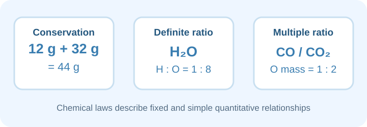

CHEMISTRY · QUICK REVISION
Laws of Chemical Combination
Five important laws, their meaning and quick examples.
See the key ratios

Five laws to remember
1. Conservation of mass — Lavoisier
Total mass of reactants = total mass of products in a closed system.
Total mass of reactants = total mass of products in a closed system.
2. Definite proportions — Proust
A pure compound always contains the same elements in a fixed ratio by mass.
A pure compound always contains the same elements in a fixed ratio by mass.
3. Multiple proportions — Dalton
When two elements form multiple compounds, the masses of one combining with a fixed mass of the other are in simple whole-number ratios.
When two elements form multiple compounds, the masses of one combining with a fixed mass of the other are in simple whole-number ratios.
4. Reciprocal proportions — Richter
Masses of two elements combining separately with a fixed mass of a third are related to the ratio in which they combine with each other.
Masses of two elements combining separately with a fixed mass of a third are related to the ratio in which they combine with each other.
5. Gaseous volumes — Gay-Lussac
At the same temperature and pressure, reacting gas volumes are in simple whole-number ratios.
At the same temperature and pressure, reacting gas volumes are in simple whole-number ratios.
Must-know examples
Water (H₂O): H : O = 2 : 16 = 1 : 8 by mass.
Carbon monoxide (CO): C : O = 12 : 16 = 3 : 4 by mass.
Carbon dioxide (CO₂): C : O = 12 : 32 = 3 : 8 by mass.
CO and CO₂: for fixed carbon mass, oxygen masses are in the ratio 1 : 2.
Gas volume: N₂ + 3H₂ → 2NH₃; volume ratio = 1 : 3 : 2.
Exam quick recall
- Conservation of mass: Lavoisier
- Definite proportions: Proust
- Multiple proportions: Dalton
- Reciprocal proportions: Richter
- Gaseous volumes: Gay-Lussac
- These laws helped establish the foundation for Dalton's atomic theory.
SkillUp Chemistry · Quick revision sheet